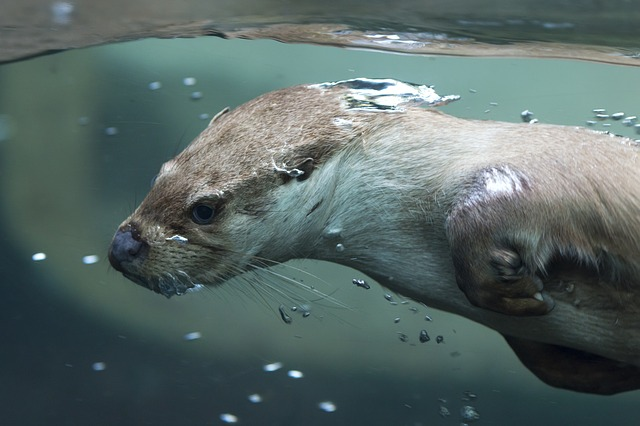

>> Clever creatures, they'll use rocks to crack open the clams. They carry rocks and store food in the loose skin under their armpits - who needs carrier bags!
>>An otter pup's fur is too dense for it to swim underwater. So, their mother leaves them floating while she searches for food, until their adult fur grows in.
>> Don't challenge an otter to a holding-your-breath competition! Sea otters can stay underwater for 5 minutes, and river otters can hold their breath for even longer - 8 minutes!

>> 90% of all sea otters live on the coast of Alaska.
>> They're hungry animals! Sea otters eat 25% of their body weight in food every day.
>> Unlike most marine mammals, they don't have a layer of blubber. But, they do have the thickest fur of all animals.